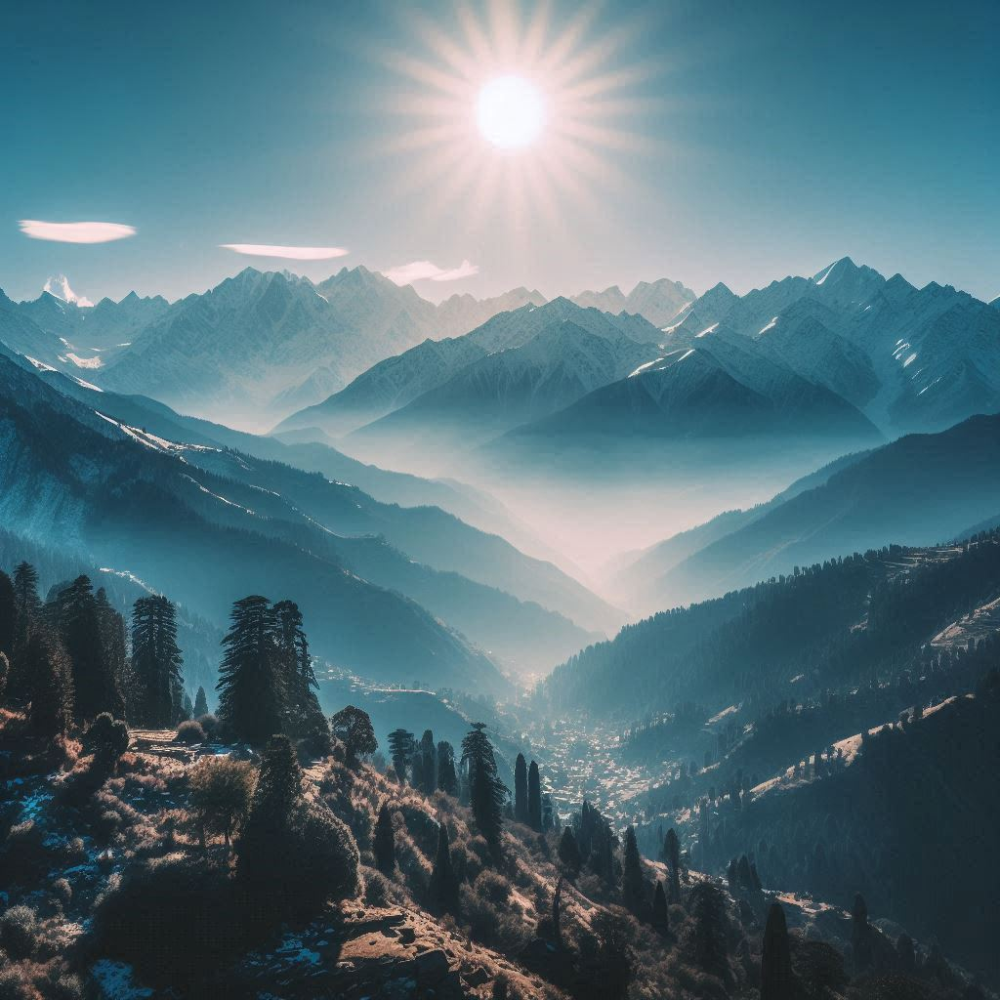
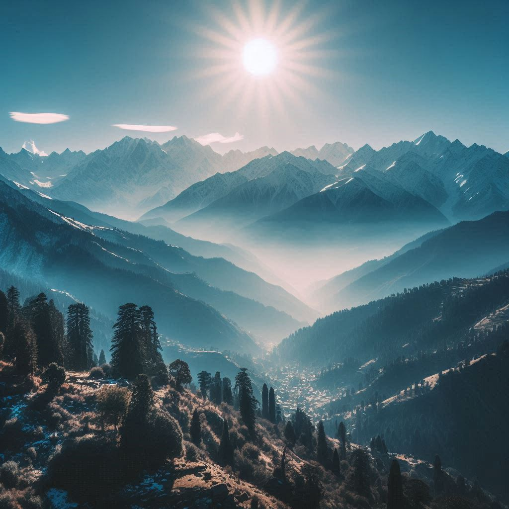

1. Hill Stations
- Shimla: The state capital, Shimla, was once the summer capital of British India. Known for its colonial architecture, The Mall, Ridge, and Jakhu Temple, Shimla offers a charming blend of history and scenic beauty.
- Manali: Surrounded by towering mountains and lush greenery, Manali is a favorite for honeymooners and adventure seekers. Major attractions include Solang Valley, Rohtang Pass, Hadimba Temple, and opportunities for paragliding, trekking, and skiing.
- Dharamshala and McLeod Ganj: Dharamshala is known for its Tibetan culture, monasteries, and as the residence of the Dalai Lama. McLeod Ganj offers spiritual experiences, Tibetan markets, and trekking trails like Triund.
- Dalhousie: This quaint town retains its old-world charm with colonial architecture and offers panoramic views of the Dhauladhar Range.
2. Adventure Tourism
- Trekking and Hiking: Himachal offers numerous trekking routes, including the Hampta Pass Trek, Pin Parvati Pass, and the Beas Kund Trek. Spiti Valley and Kinnaur are famous for their rugged treks.
- Paragliding: Bir Billing is one of the world’s best paragliding destinations, attracting enthusiasts from across the globe.
- Skiing: Solang Valley and Kufri are popular skiing destinations, especially during winter months.
- River Rafting: The Beas and Sutlej rivers offer thrilling river rafting experiences, with Rishikesh and Kullu-Manali being popular spots.
- Camping: The scenic valleys and mountains of Himachal provide great opportunities for camping, often combined with treks.
3. Spiritual Tourism
- Temples: Himachal Pradesh is known as the "Land of Gods" (Dev Bhoomi) due to its numerous temples and shrines. Notable sites include the Jwala Ji Temple, Naina Devi Temple, Chintpurni Temple, and Baijnath Temple.
- Monasteries: The state has many Buddhist monasteries, particularly in Lahaul-Spiti, Kinnaur, and Dharamshala. The Key Monastery and Tabo Monastery are significant centers of Tibetan Buddhism.
- Ashrams and Retreats: Visitors seeking spiritual growth and peace can explore yoga and meditation centers scattered across the state.
4. Wildlife Tourism
- National Parks and Sanctuaries: The Great Himalayan National Park (a UNESCO World Heritage Site) is known for its biodiversity and trekking routes. Other notable wildlife sanctuaries include Pin Valley National Park, Chail Wildlife Sanctuary, and Renuka Wildlife Sanctuary.
 

5. Cultural Tourism
- Traditional Festivals: Visitors can experience Himachal’s vibrant culture through festivals such as Kullu Dussehra, Mandi Shivratri, and the Lavi Fair. Local dances like Nati and traditional music also reflect the rich heritage.
- Handicrafts: Himachal is famous for its handloom products, including Kullu shawls, Chamba rumals, Himachali caps, and wooden carvings. Tourists can shop for these unique items in local markets.
6. Lakes and Valleys
- Lakes: Pristine lakes such as Rewalsar, Renuka, Chandra Tal, and Dal Lake near McLeod Ganj offer peaceful settings for picnics, boating, and spiritual reflection.
- Valleys: Kullu, Spiti, Kinnaur, and Kangra valleys are known for their mesmerizing beauty and orchards.
7. Heritage Tourism
- Kangra Fort: One of India’s oldest forts, it offers stunning views and historical significance.
- Palaces and Mansions: Heritage properties such as Nalagarh Fort and wood-carved temples provide a glimpse into the region’s royal past.
8. Health and Wellness Tourism
- Ayurveda and Healing Centers: Several resorts and wellness centers in Himachal offer Ayurvedic treatments, naturopathy, and spa therapies, making it an ideal destination for rejuvenation.
Conclusion
Himachal Pradesh's diverse landscapes, rich culture, and vast range of activities make it a paradise for tourists. Whether seeking adventure, peace, or cultural experiences, visitors to this mountainous state find it to be a rewarding and unforgettable destination.